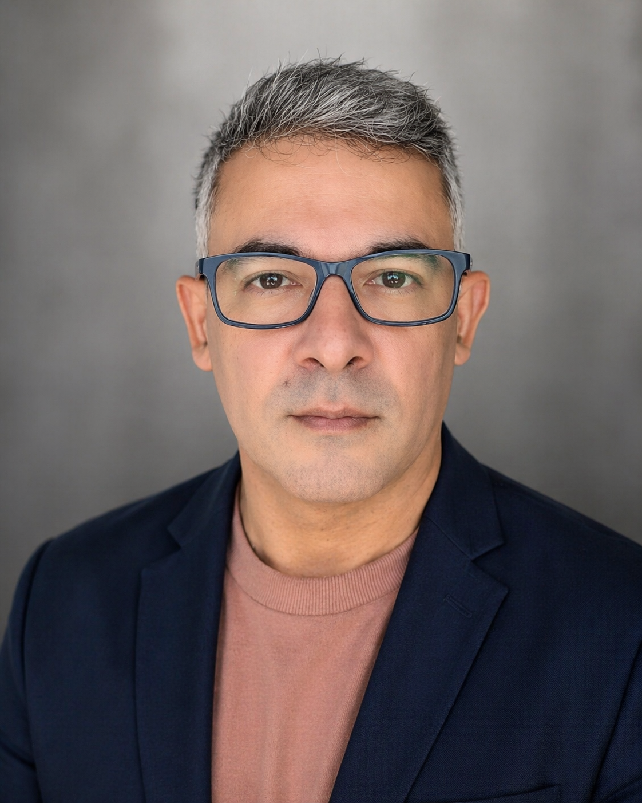

Francisco Salustiano
Gestão & Processos
Trajetória profissional em gestão de empresas, desenvolvimento comercial, estruturação de processos e implantação de soluções para tornar operações mais organizadas e eficientes.
Na Salustiano & Alves, atua especialmente na estruturação dos atendimentos, processos, relacionamento com clientes e desenvolvimento de soluções administrativas.
“Entender o problema, encontrar o caminho e conduzir cada etapa até a solução.”